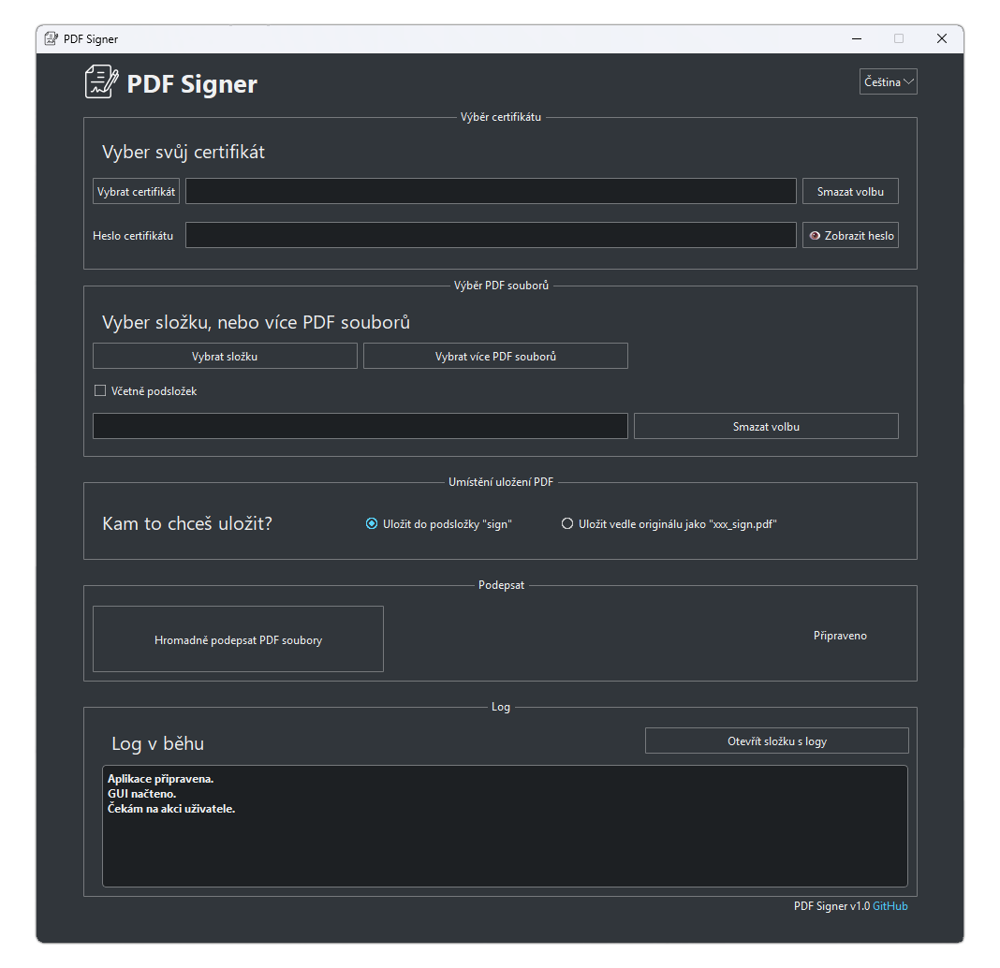

100% offline
Documents are processed locally on your PC. No internet connection or cloud service is required for signing.
Digitally sign one PDF or up to 500 documents in a single batch. No cloud uploads, no third-party servers — your files stay on your computer.

Straightforward PDF signing, without subscriptions, accounts or unnecessary complexity.
Documents are processed locally on your PC. No internet connection or cloud service is required for signing.
Sign individual PDF files, select multiple documents or process a whole folder in one batch.
Use your existing .p12 or .pfx certificate containing a private key.
A visible signature is placed at the bottom-right of the final page of each signed PDF.
Follow processing status in the application and review results in log files.
No subscription or paid features. Free for personal and commercial use under the freeware license.
A simple workflow designed to get the job done.
Select a valid PKCS#12 (.p12 / .pfx) certificate and enter its password.
Choose individual PDFs or a folder, including subfolders if needed.
Select the output location, start batch signing and check the results in the log.
A valid PKCS#12 certificate (.p12 or .pfx) with a private key is required. Hardware signing tokens and other certificate formats are not supported. The visible signature position is fixed. PDF Signer does not issue certificates. Signature validity and legal effect depend on your certificate and applicable requirements; verify signed documents before sharing.
Get PDF Signer for Windows and keep your document signing on your own computer.
↓ Download for Windows